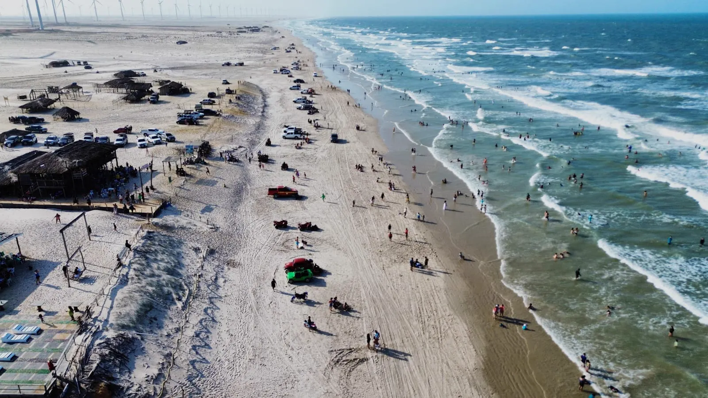

Como Chegar em Paulino Neves
Praia do Barro Vermelho — Maranhão
“Rotas, distâncias e dicas para sua viagem”
Destino — Maranhão
Paulino Neves: Porta dos Lençóis Maranhenses

Paulino Neves fica no litoral do Maranhão, entre Barreirinhas e Tutóia. É de lá que se acessa a Praia do Barro Vermelho, um dos destinos mais exclusivos e menos turísticos da região dos Lençóis Maranhenses.
A cidade é a porta de entrada para uma das praias mais preservadas do Nordeste. Quem visita os Lençóis Maranhenses pode facilmente incluir Paulino Neves no roteiro como uma parada perfeita para almoçar frutos do mar frescos na Barraca do Ivan.
Transporte
Opções de Como Chegar
Por Avião
Os aeroportos mais próximos são o de Parnaíba (PHB), a cerca de 145 km, e o de São Luís (SLZ), a cerca de 290 km. Confira os voos disponíveis antes de viajar: o aeroporto de Barreirinhas está sem voos comerciais regulares.
De Ônibus via Barreirinhas
De São Luís, pegue ônibus até Barreirinhas (~4h a 5h) e de lá um transporte local até Paulino Neves (~1h pela MA-315). Expresso Guanabara e São Benedito cobrem esse trecho.
De Carro via BR-402 e MA-315
Saindo de São Luís: BR-135 até Bacabeira, depois BR-402 até Barreirinhas (cerca de 255 km) e MA-315 até Paulino Neves (cerca de 40 km). São cerca de 290 km no total.
De Carro via Parnaíba (PI)
De Parnaíba (PI): siga até Tutóia e de lá pela MA-315 até Paulino Neves (cerca de 33 km). São cerca de 145 km no total.
Traslado 4x4 desde Barreirinhas
Para quem quer passar pelas dunas no caminho. De Barreirinhas, contrate um traslado 4x4 até Paulino Neves (~1h30-2h pelas dunas). Muitas agências oferecem esse serviço.
De Barco pelo Rio Preguiças
Uma opção cênica: sair de Barreirinhas de barco pelo Rio Preguiças até Mandacaru ou Caburé e prosseguir de 4x4. Viagem bonita com dunas e mangues.
Localização
Praia do Barro Vermelho no Mapa
Paulino Neves – Maranhão. Use o mapa para planejar seu trajeto.
Mais fácil ainda
Prefere Vir de Excursão?
Não se preocupe com transporte ou roteiro. Organizamos excursões com traslado, almoço completo e um dia perfeito na Praia do Barro Vermelho.
(11) 96917-0096